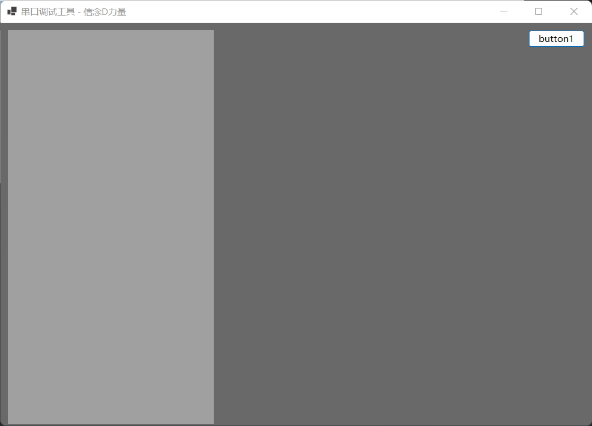
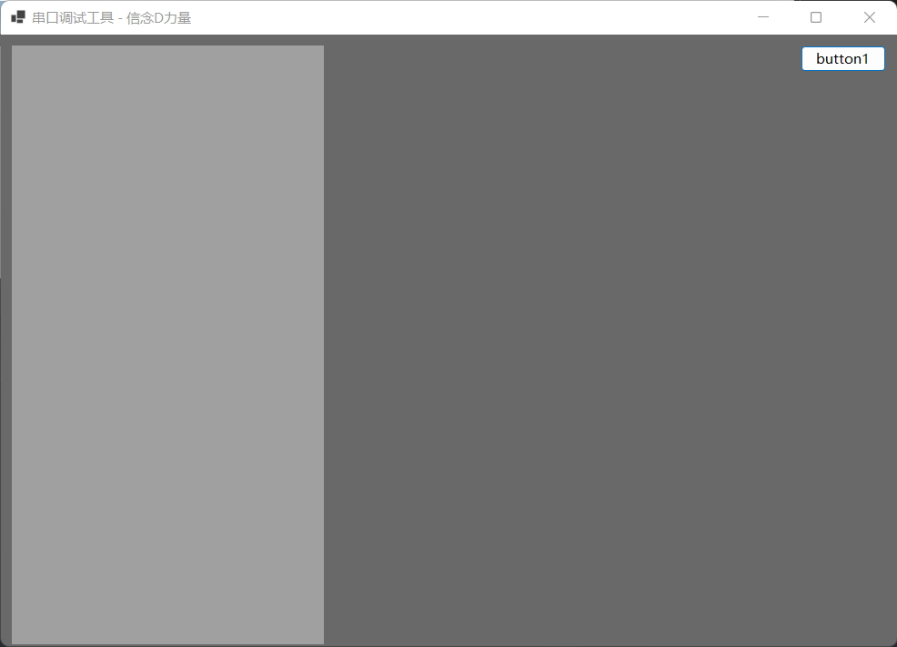

基础知识
Anchor 属性
Anchor 的中文翻译是锚点，就是定位的意思。
在 WinFrom 中控件的 Anchor 属性是用来定位控件的位置的。
使用注意事项：
一旦对控件使用了 Anchor 属性，那么这个控件就是以当前的位置状态来相对于父容器控件的确定的。
按钮定位的例子
首先在窗口的右上角放置一个按钮，然后设置 Anchor 属性为：Top, Right。这样随着窗口的变化按钮就能始终保持在右上角了。

Anchor 的中文翻译是锚点，就是定位的意思。
在 WinFrom 中控件的 Anchor 属性是用来定位控件的位置的。
使用注意事项：
一旦对控件使用了 Anchor 属性，那么这个控件就是以当前的位置状态来相对于父容器控件的确定的。
首先在窗口的右上角放置一个按钮，然后设置 Anchor 属性为：Top, Right。这样随着窗口的变化按钮就能始终保持在右上角了。
